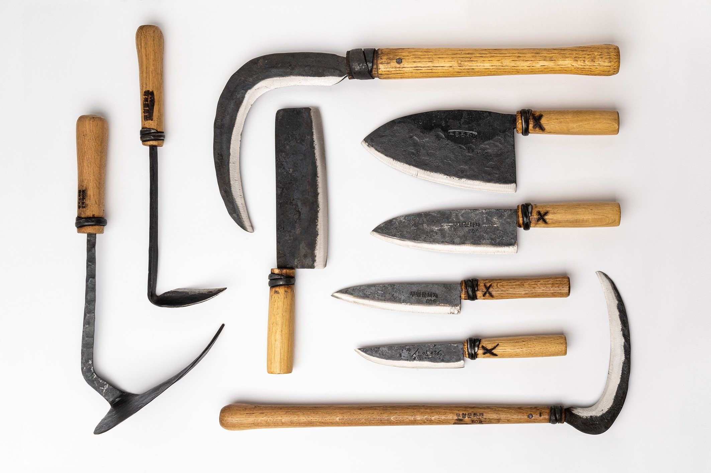
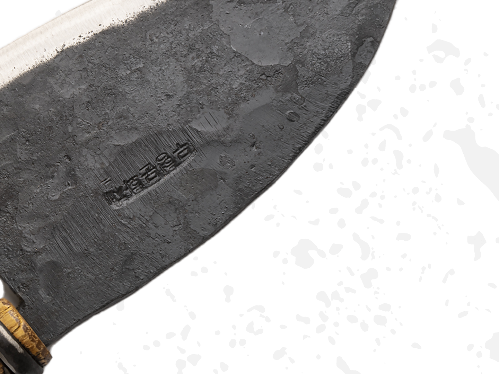
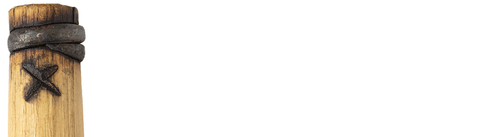
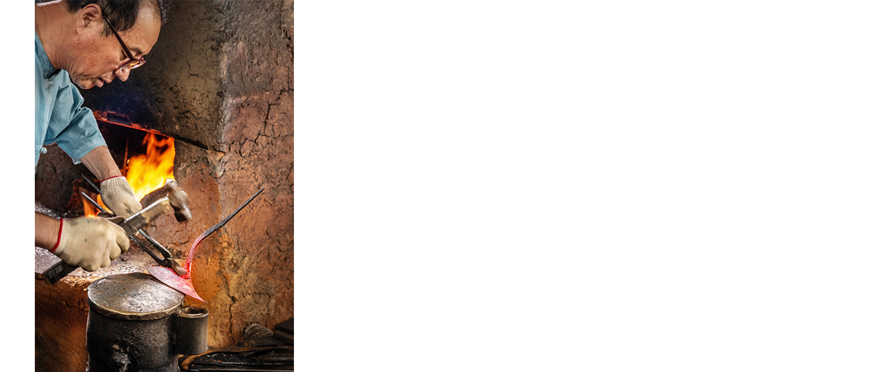
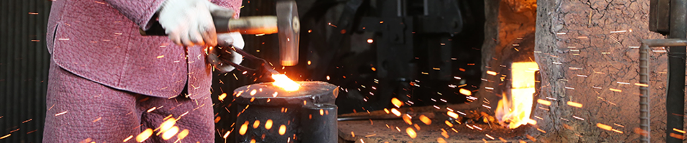
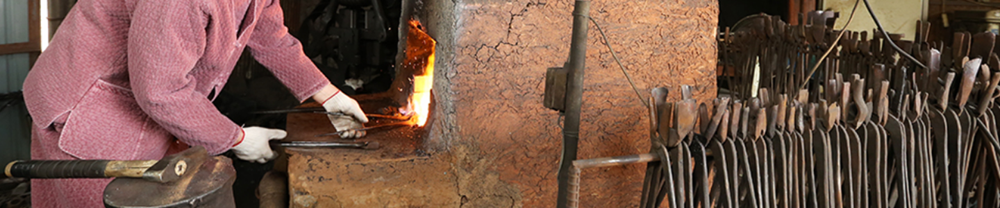
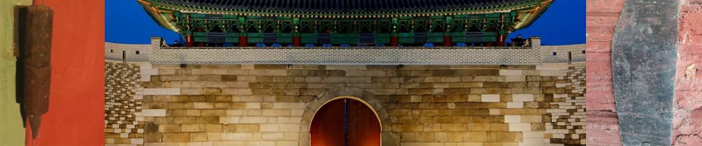

이로 인해 칼의 몸은 유연성을 가지지만,
칼날은 단단하고, 강합니다.

Master Shin's는 나무를 태우지 않고
나무 손잡이 주위에 X 밴딩 기법인 “당기”를 사용합니다.
한국에서 X 표시는 전통적으로 고품질 칼에 사용되어
품질이 낮은 철이 풍부한 강철과 구별됩니다.


1845년 설립된 안성 대장간의 5대 전수자이며,
신장인의 모루 장인 대표이다. 13세인 1966년에
입문한 후 17세에 최연소 대장이 되었으며 지난 55년간
수작업으로 주방칼과 농기구 및 건축 철물을 생산하고 있다.
2008년 화재로 소실된 국보 1호 숭례문 복원 사업에
참여하여 자신만이 지켜온 흙 접쇠 기술을 재현해
복구를 성공 리에 마칠수 있도록 도왔다. 이에 정부는
그를 2016년에 경기도 무형문화재 60호 로 지정하였다.
그에게 원통모양의 조선 모루는 전통기술의 전수를 의미한다.
그의 손을 거쳐 생산되는 도구들은 세계 여느 미술관에 내놓아도
손색이 없는 한국 특유의 단순하면서도 세련된 형태와 더불어
도구로서의 기능성과 견고함을 지녔다. 현재 신인영의 칼은
미국과 유럽에서 절찬리에 판매되고 있다.
“
풀무질과 메질을 하다가 바로 집게를 잡았죠.
만 18살이던 해 드디어 대장장이의 길로 들어섰어요.
대장간 역사를 담은 박물관을 만들어 우리 기술의 탁월함을 후손들에게
널리 보여주고 세계에 자랑하고 싶어요.
우리 기술의 맥을 이어가야 한다고 생각해요.
”

“
신인영 야장의 무기는 바로 ‘접쇠’ 기술.
황토를 접착제처럼 이용해 쇠를 몇 겹씩 붙이는 이 기술은 국내에서 신인영 야장만이 갖고 있다고 한다.
”

“
제가 선발돼서 간 것까지는 기뻤으나 막상 화재를 입은 숭례문을 보니 너무나 가슴이 아프고 막막했어요.
이 문화재를 복구하는데 내가 어떻게 도움이 될 수 있을지 이런저런 생각에 잠을 못 이뤘죠.
주말마다 숭례문으로 출퇴근하고, 숭례문 복원을 위해 많은 연구를 했어요. 복구 작업을 진행하면서
제가 유일하게 보유한 ‘흙접쇠’ 기술을 지도하고 싶다는 생각을 갖게 됐어요.
”

조선 시대 궁궐 등 중요 건축물 수리 내역 등을 기록한〈영건의궤(營建儀軌)〉에는
야장이 못을 비롯한 철물을 만들었다고 기록돼 있다.
숭례문에 사용된 철물 중 가장 많은 것은 철정(鐵釘, 못)으로,
머리가 없는 무두정(無頭釘), 휘어진 곡정(曲釘), 머리가 둥근 원두정(圓頭釘) 등이 있다.
복원을 위해 국산 철광석에서 추출한 철편으로 못과 같은 철물을 제작했고, 부족한 재료는 경복궁 근정전과 경회루 수리 중
나온 전통 못과 띠철(帶鐵)을 모아 만들었다.
소요된 전체 물량은 못, 철엽 등 약 3만6000점. 철엽(鐵葉)은 홍예문 바깥 면에 부착한 얇은 철판으로
불화살 등 외적의 침입을 막기 위한 것이다. 길이 2자, 폭 6치로, 숭례문에는 모두 411개의 철엽이 사용됐다.
“
경기도 무형문화재는 1987년 지정을 시작으로
현재 예능 26종목, 기능 38종목 등 총 64종목을 지정하고 있습니다.
”
#58 다듬칼 #59 과일칼 #60 파칼 #61 회칼 #62 주방칼 (중) #63 야채사각칼 #64 파호미
#65 일반 호미 #66 일반 낫 #67 풀 낫 #68 북호미 #69 모종삽 #70 세발 쇠스랑 #71 세발 호구
copyright 2021 @ shin in young All rights reserved.